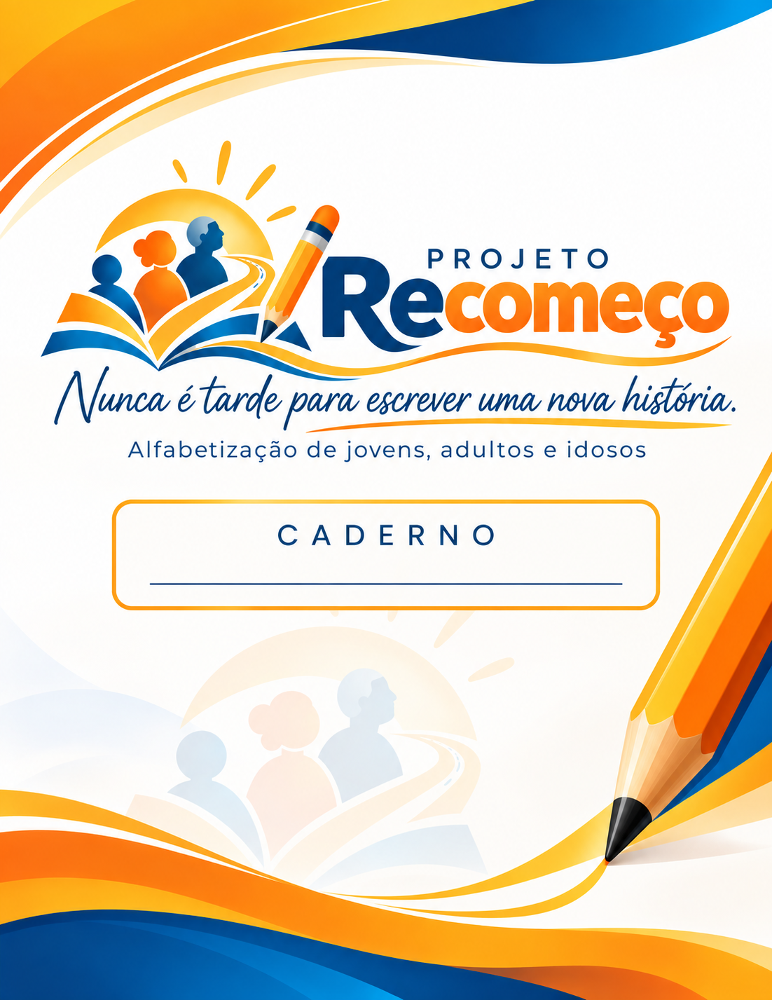
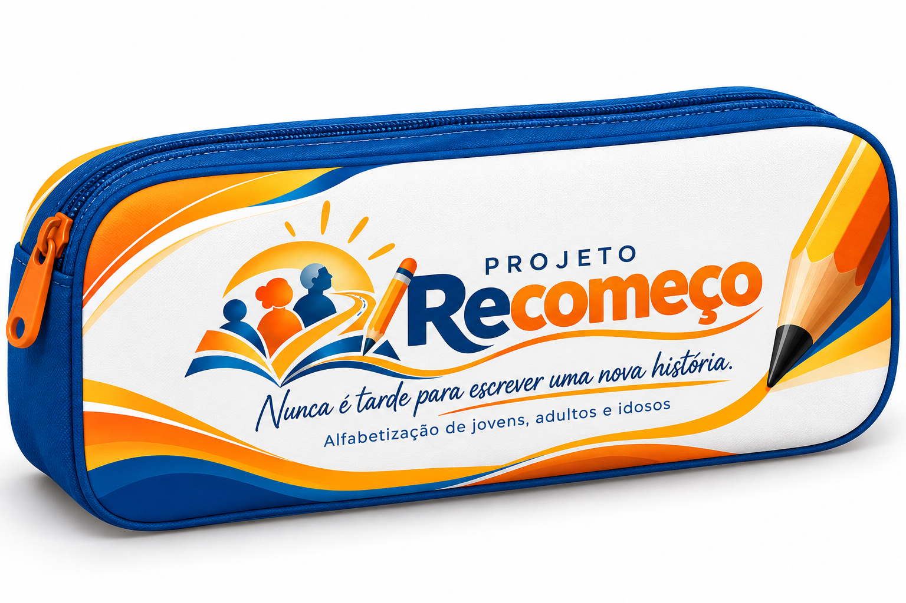
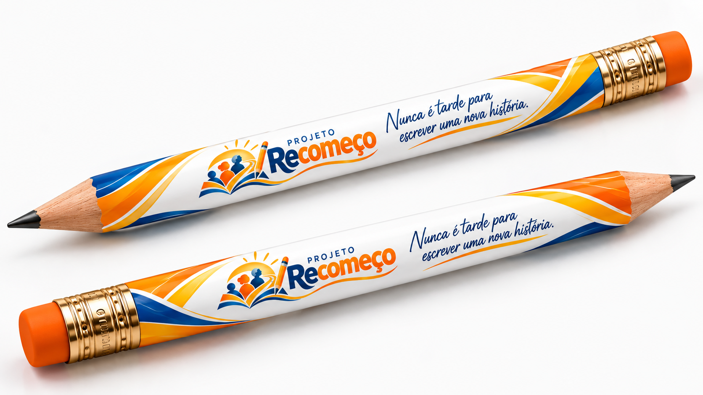
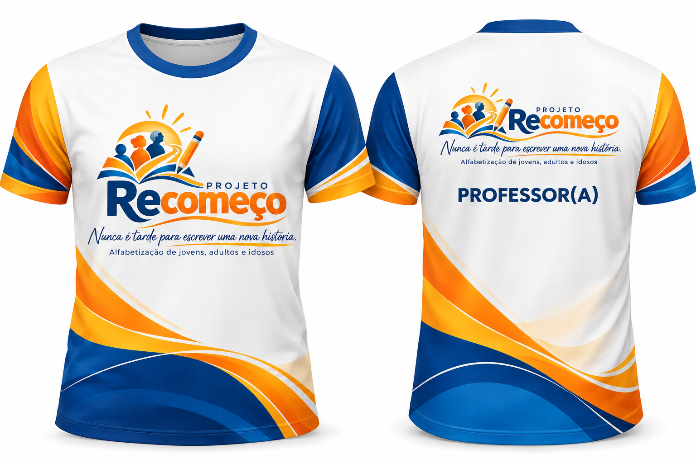

Alfabetização de jovens, adultos e idosos com uma proposta acolhedora, prática e conectada à vida cotidiana, na Cidade Estrutural/DF.
Ver propostaO Projeto Recomeço atende pessoas que não tiveram acesso adequado à escolarização ou ainda apresentam dificuldades significativas de leitura, escrita e matemática básica. O aprendizado é trabalhado como instrumento de cidadania, inclusão social e continuidade da escolarização.
Respeitando o ritmo, os conhecimentos prévios e a trajetória de cada participante.
Avaliação inicial para reconhecer conhecimentos prévios e necessidades individuais.
Leitura, escrita e matemática com textos, documentos, mensagens, avisos e situações cotidianas.
Grupos de leitura e escrita, rodas de conversa, atividades práticas e exercícios aplicados.
Registros de aprendizagem e intervenções adequadas ao desenvolvimento do aluno.
Comparação da evolução entre o diagnóstico inicial e a avaliação final.
Estímulo e encaminhamento para prosseguimento dos estudos na Educação de Jovens e Adultos.
O foco é desenvolver competências que possam ser percebidas na rotina do participante.
"Alfabetizar é ampliar autonomia, cidadania e possibilidades de futuro."
Sede do Instituto Edukhan no próprio território, facilitando acesso e permanência.
Experiência continuada junto às famílias e capacidade de mobilização e acompanhamento.
Atuação com crianças, adolescentes, adultos e famílias, integrando educação e desenvolvimento.
O enquadramento definitivo depende da análise da SEEDF, das regras vigentes de cada programa e da disponibilidade orçamentária.
Pacto Nacional pela Superação do Analfabetismo e Qualificação da EJA, Programa Brasil Alfabetizado e outras ações MEC/FNDE podem ser avaliados pela SEEDF conforme regras de adesão e execução.
Termo de Fomento ou Termo de Colaboração, conforme o MROSC e a regulamentação distrital, além da possibilidade de fonte orçamentária vinculada a emenda parlamentar distrital quando juridicamente compatível.
Materiais pensados para criar pertencimento, acolhimento e unidade visual ao longo da jornada.




O Instituto Edukhan propõe construir com a SEEDF o enquadramento pedagógico, jurídico e orçamentário mais adequado para ampliar o acesso à alfabetização na Cidade Estrutural.
Conheça o Instituto Edukhan